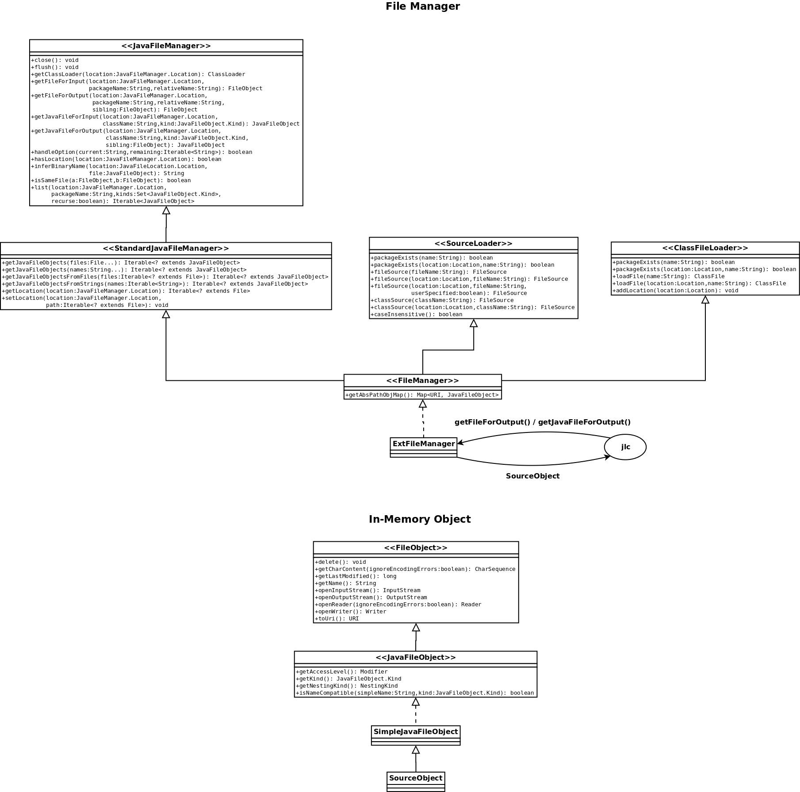

Major changes to Polyglot for Version 2.5
See the file CHANGES for more information about the changes made to Polyglot for Version 2.5.
Support for Java 1.5 language features added, through the JL5 extension (polyglot.ext.jl5).
This extension is based on the Polyglot for Java 5 project by Milan Stanojevic and Todd
Millstein (), with additional input from Vincent Cavé. The extension currently
supports all Java 5 langage features, except for annotations, for
which only limited support is currently provided. Additional
support will be added in later releases.
The source code of Polyglot has itself been updated to take advantage of the generics support introduced in Java 1.5. This may break older extensions that assume non-generic interfaces.
The way Polyglot handles intermediate source files and generated class files has been changed in version 2.5. In previous versions, the back end of the compiler was generating .java files which were stored to the file system and then handed off to javac , unless the -post option was given to specify a different post-compiler. The new standard behavior is to generate Java source code internally, and use the Java compiler support provided in the javax.tools package to invoke javac within the same JVM as Polyglot itself. This change improves performance and lessens dependency on the file system. The original functionality is still available in version 2.5 via the -post option.
The changes made to Polyglot are summarized below. Most Polyglot extensions should require few or no changes to work with version 2.5. If changes are required, the Porting Guide should be helpful.
Design Changes
The following changes to the design are also summarized in the UML diagram below.
- polyglot.frontend.SourceLoader is now an interface. Implementation of this interface is now provided in polyglot.filemanager.ExtFileManager.
- polyglot.types.reflect.ClassFileLoader is now an interface. Implementation of this interface is now provided in polyglot.filemanager.ExtFileManager.
- polyglot.types.reflect.ClassPathLoader has been deleted.
- polyglot.types.reflect.ClassFile is an interface and polyglot.types.reflect.ClassFile_c is an implementation of that interface.
- polyglot.frontend.Source and FileSource are now interfaces. polyglot.frontend.Source_c implements FileSource.
- In polyglot.main.Options, method for setting the full classpath has been deleted.
Additions
- polyglot.frontend.ExtensionInfo interface has an additional method classFileLoader() that creates a loader that loads .class files from multiple locations.
- polyglot.filemanager.FileManager interface, extending javax.tools.StandardJavaFileManager, polyglot.frontend.SourceLoader and polyglot.types.reflect.ClassFileLoader
- polyglot.filemanager.ExtFileManager class, implementing the polyglot.filemanager.FileManager interface
- polyglot.filemanager.SourceObject class, extending javax.tools.SimpleJavaFileObject to provide in-memory objects to hold translated Java code
- polyglot.util.StringBuilderWriter class, providing a writer that writes to a StringBuilder
NOTE: Instances of javax.tools.JavaFileManager.Location in polyglot.filemanager.ExtFileManager are set in start() method (of polyglot.main.Main ) by calling addLocationsToFileManager() method of polyglot.frontend.ExtensionInfo interface.
JL5 Extension
The package polyglot.ext.jl5 implements
support for Java 1.5 language features. This requires
significant changes to the type system to support Java
generics. For information on how to write an extension that supports
Java 1.5 language features, please see the Porting Guide.
jl5c script in the bin
directory. The script jl5c adds several new
command-line arguments, described below.
-morepermissiveinference: Calls to methods with type parameters will infer types for the type parameters. This is detailed in the Java Language Specification, 3rd edition in Section 15.12.2.7. In some situations, the expected return type of the call is used to help the inference (Section 15.12.2.8). According to the language specification, this should only occur when there are unresolved type arguments to the method call. However,javacappears to use the expected return type of the call in additional situations, in order to provide more precise type inference. To preserve compatibility withjavac, this command-line option will use the expected return type of method calls in type inference to infer type arguments that are similar to those produced byjavac.The following program illustrates the need for the command-line option.
javacwill accept this code snippet;jl5cwill reject it unless the-morepermissiveinferencecommand-line argument is specified.abstract class C { public void m(D<? extends C> x) { E<C> a = foo(x.bar()); } abstract <T> E<T> foo(E<? extends T> s); } interface D<U> { public E<U> bar(); } interface E<S> { }-removeJava5isms: The compiler will perform passes that remove Java 1.5 language features, and produces Java 1.4 compliant code. This essentially translates Java 1.5 code to Java 1.4 code.-enumImplClass classname: If-removeJava5ismsis specified, then the compiler needs to use some class as the superclass ofenums. This would normally bejava.lang.Enum. However, thejavaccompiler does not allowjava.lang.Enumto be the super-class of any declared class, even when-source 1.4is specified. This command-line argument can be used to specify a different class that provides the same functionality asjava.lang.Enum, and can be used to compile Java 1.5 code to Java 1.4 code that will compile withjavac. See the filetestsjl5/java-src/MyEnum.javafor an example of a class suitable for specifying as an argument to this command-line option.
FileManager implementation and associated SourceObject
The following UML diagrams show how the different parts of the new file manager implementation are composed.
